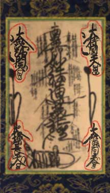
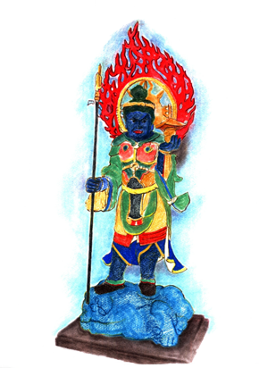
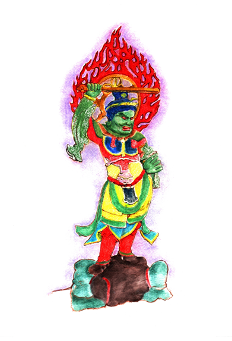
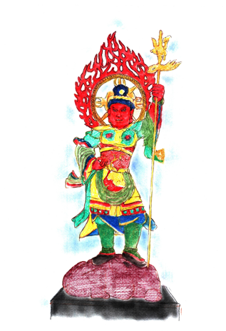
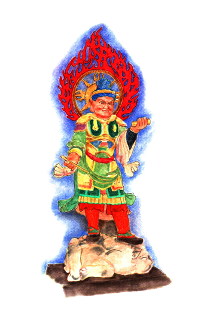

The Four Heavenly Kings
Located in the four corners of the Mandala Gohonzon. They are protective deities of the cardinal directions of North, South, East and West.
Dai Bishamon Tenno (Jpn.); Vaishravana (Skt.); Heavenly King of the North
Located in the upper left hand corner of the Mandala Gohonzon.
Dai Jikoku Tenno (Jpn.); Dhritarashtra (Skt.); Heavenly King of the East
Located in the upper right hand corner of the Mandala Gohonzon.
Dai Zocho Tenno (Jpn.); Virudhaka (Skt.); Heavenly King of the South
Located in the lower Left hand corner of the Mandala Gohonzon.
Dai Komoku Tenno (Jpn.); Virupaksha (Skt.); Heavenly King of the West
Located in the lower Right hand corner of the Mandala Gohonzon.